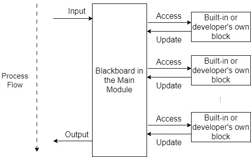

DialBB: A Framework for Developing Dialogue Systems
News
Overview
DialBB is a framework for building dialogue systems developed by C4A Research Institute, Inc. DialBB has been developed as an information technology educational material. DialBB has extensible architecture and is written in readable codes. DialBB enables the development of dialogue systems by combining modules called building blocks. Developers can easily build simple systems using built-in blocks and can build advanced systems using their own developed blocks.
The main module of DialBB application receives a user utterance input in JSON format via method calls or via the Web API returns a system utterance in JSON format. The main module works by calling blocks, in sequence. Each block takes JSON format (data in Python dictionary) and returns the data in JSON format. The class and input/output of each block are specified in the configuration file for each application.

Getting Started
Documents
Dcoument for the latest version
Papers and Citation
Please cite the following paper when publishing a paper on work that uses DialBB.
Mikio Nakano and Kazunori Komatani. DialBB: A Dialogue System Development Framework as an Educational Material. In Proceedings of the 25th Annual Meeting of the Special Interest Group on Discourse and Dialogue (SIGDIAL-24), pages 664–668, Kyoto, Japan. Association for Computational Linguistics, 2024
Questions
If you have any questions or find problems, please feel free to email at dialbb at c4a.jp
License
DialBB is released under Apache License 2.0.